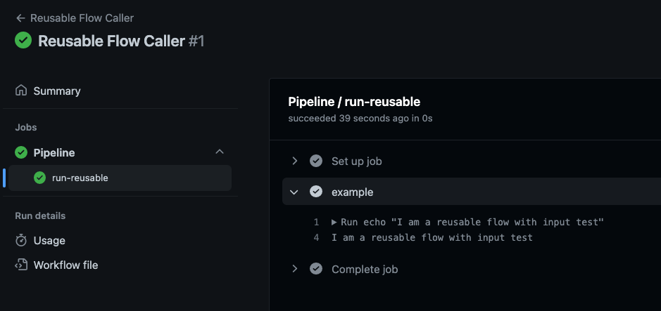
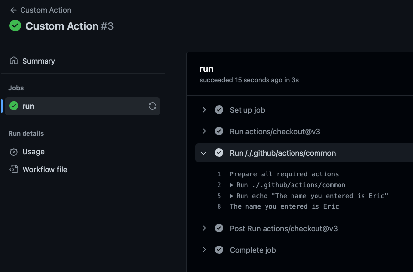

Custom Actions vs Reusable Workflows
One of the things we see with people getting started with GitHub Actions is confusion around creating an action vs creating a reusable workflow. They have two distinct use-cases, but often they can be use together to make a powerful solution.
Reusable Workflows
You can think of reusable workflows as templates of workflows. A critical thing to know about them is that they are not triggered directly, but rather are referenced in another workflow. When a workflow uses a reusable flow, GitHub behind-the-scenes actually downloads it and runs it. This leads to the next most important thing to note--the reusable workflow actually executes in the context of the caller. This has very important ramifications, as seen in the example below:
- Repository
Ahas reusable workflowX- reusable workflow
Xreferences a GitHub Secret${{ secrets.password }}
- reusable workflow
- Repository
Bhas workflowY
When workflow Y is triggered, it calls the reusable flow X, which references ${{ secrets.password }}. And here we come to it--even though reusable flow X lives in repository A, because it's executing in the context of repository B, repository B must have defined the secret ${{ secrets.password }}. Put another way, the reusable workflow brings no state with it when called.
The fact that reusable workflows bring no state can be challenging. For example, you cannot directly include helper script files alongside your reusable workflow. In addition, it means that the the caller of your reusable workflow must have all of the information necessary to execute it. This can make some security practices challenging, such as if you'd like your reusable workflow to perform encryption or signing of data, those secret keys must be distributed, or accessible to, to all repositories that will use the flow.
Example
In the case of the example above, you can see the caller workflow calling the reusable flow below. Take note how you can see the reusable workflow steps and output just as if it were the workflow you triggered yourself: 
Custom Actions
Custom Actions are probably more common than Reusable Flows, as GitHub Actions promotes them right when you get started using it. Any of the actions created and available on the GitHub Marketplace are all Custom Actions created by someone else. At it's core, a Custom Action is just a wrapper around some code.
Since you're reading this though, you're more likely interested in creating your own Custom Actions. Beyond the basic documentation for creating a custom action, a key difference between them and Reusable Workflows is that when using an action, you automatically have access to all of the files in the custom action. This means that if you want the Custom Action to be comprised of multiple Javascript files, or even stateful JSON data, it will all available when called.
Custom Actions currently can happen in two forms:
- A dedicated repository
- A folder in an existing repository
Dedicated Repository Action
These type of actions are what you see in the GitHub marketplace. They will always have a top level action.yml file such as this one for stale issues. To use them, you can simply use the following syntax:
jobs:
stale:
runs-on: ubuntu-latest
steps:
- uses: actions/stale@v6
with:
stale-issue-message: 'Stale issue message'
...
Where actions/stale@v6 references the action in the format public, or the repository you are using it from must have proper access (i.e. it's internal and in the same organization). We will omit an example from this section as it's basic functionality for GitHub Actions.
Directory-based Action
If you run into a scenario where you'd prefer to house multiple Custom Actions in the same repository, or maybe modularize your code by having a Custom Action in the same repository as your workflow, you can also store the action anywhere in a repository. The key here is that the repository that holds the Custom Action must be checked out prior to use. To use a Custom Action in this manner, the syntax is as follows:
jobs:
stale:
runs-on: ubuntu-latest
steps:
- name: Checkout
uses: actions/checkout@v3
- name: Run Custom Action
uses: ./.github/actions/custom-action
Where ./.github/actions/custom-action is a folder in the repository and is structured according to the documentation for creating a custom action.
Example
In the case of the example above, you can see the output of the Custom Action here: 